Bowhead whale: rebuilt skin, head and baleen
The bowhead now has a larger arched head, high lower lips, short broad flippers and wider flukes. All colors and materials from the supplied sculpt are discarded. New charcoal skin, subtle irregular grey sloughing and a white chin with dark islands follow the supplied photo references.
Explore the interactive bowhead · Main archive record · Download the textured GLB
What was corrected
| Region | Result and scientific basis |
|---|---|
| Body and head | The supplied exterior was welded, reduced for web delivery and reshaped. The head and mouth reach approximately one-third of the body, with a narrow arched upper head and tall bulky lower lips. Short broad flippers and broad horizontal, notched flukes complete a stocky body. The back has no dorsal fin or rorqual throat pleats. These are selected adult proportions, not dimensions recovered from a photographed individual. Alaska Fish and Game; NOAA. |
| Skin and white lower jaw | A fresh non-overlapping atlas carries new albedo, shallow relief and roughness maps. Smooth dark skin has restrained wet highlights, irregular grey variation and sparse fine scars. The white anterior lower jaw has an uneven boundary and small dark islands; the upper rostrum remains dark. Bowheads lack the characteristic right-whale callosity pattern. Marking extent and sloughing differ among individuals and seasons. The selected moderate-wear appearance is not a universal template or a catalogue identification. Fortune et al. 2017, including its linked 2018 reference correction. |
| Baleen and oral anatomy | A new cut separates the lower jaw. Reconstructed palate, oral floor and bulky tongue accompany two racks of long narrow keratin plates, with shorter end plates and fine lingual fringes. The selected 320 plates per side are within the roughly 300–330 described in sources; their dimensions and drawn fibre density are illustrative. The jaw opens around retained upper-jaw baleen. Baleen is not teeth, and the throat does not inflate as a rorqual pouch. North Slope Borough field anatomy; Werth and Potvin 2016. |
Actual model review
These images render the same reconstructed geometry and maps used by the interactive viewer. They use the compatibility software renderer; lighting is approximate, and appearance can differ on a phone or GPU. Private supplied photographs and scientific figures were used as references and are not embedded in this public page or the texture maps.

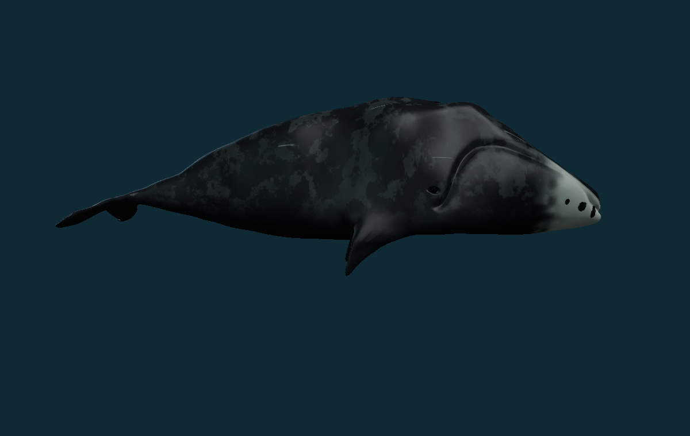
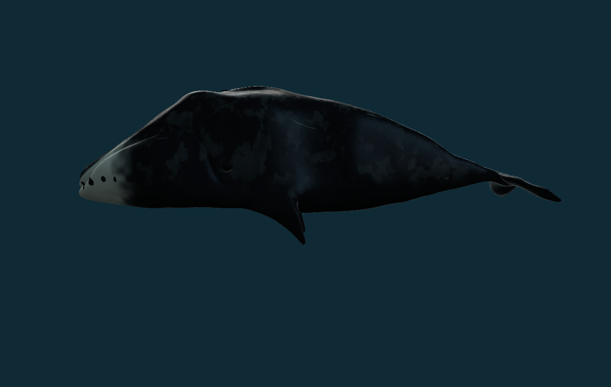
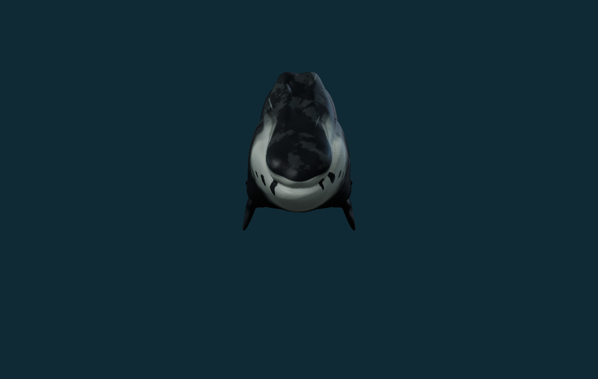
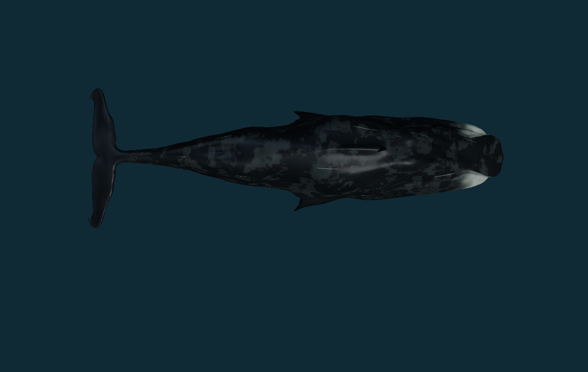
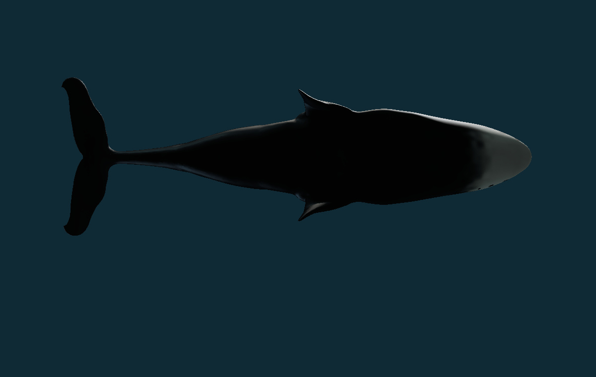
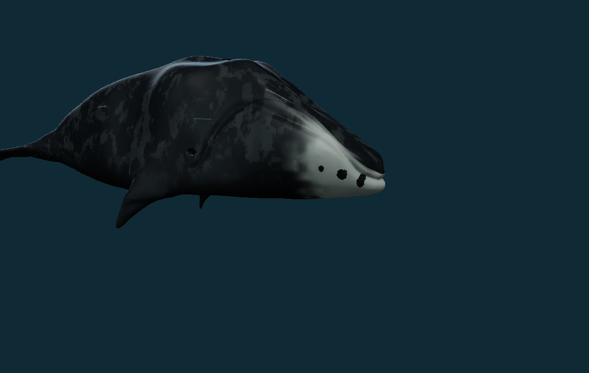
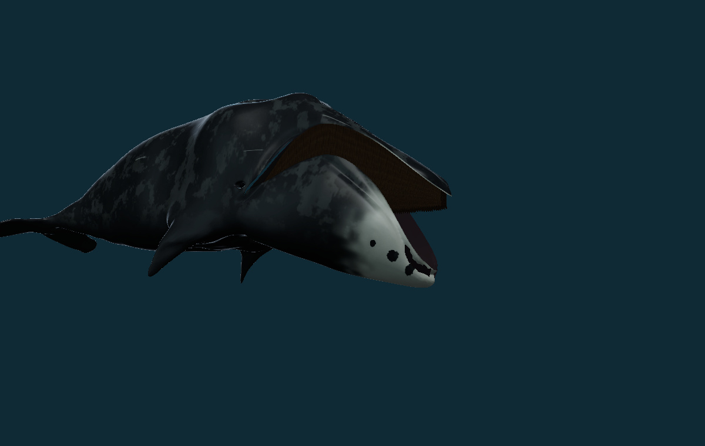
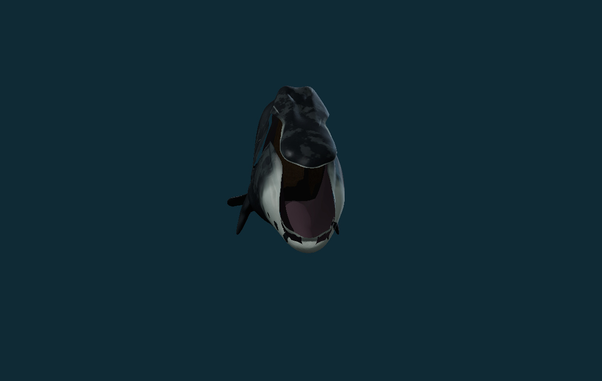
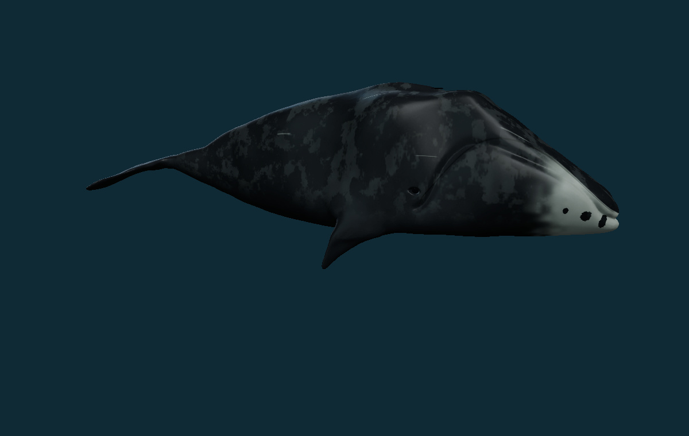
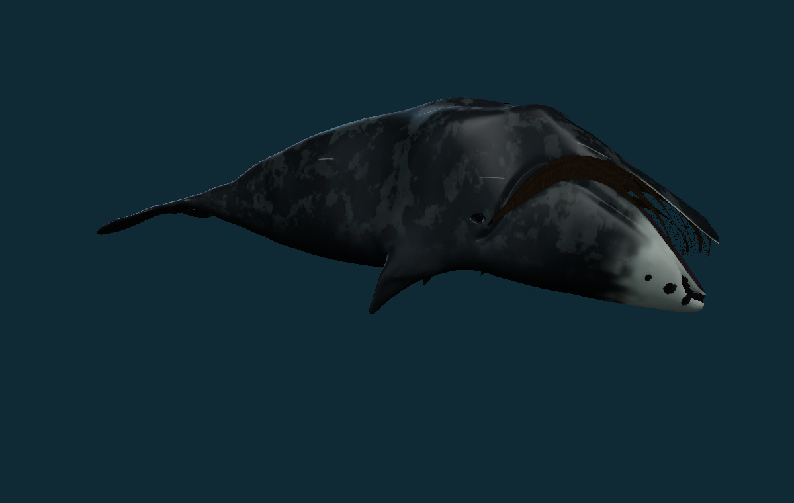
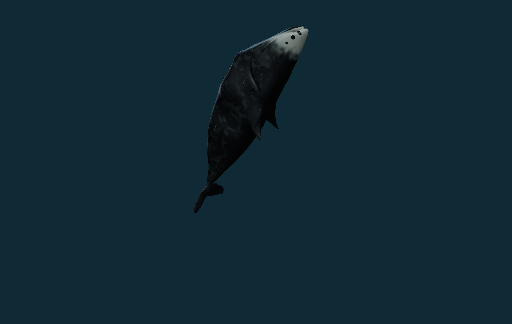
Six researched movement studies
All studies are finite and return to their initial state after twelve authored display seconds. The body, topology, skin and oral anatomy remain the same throughout. They illustrate observed kinds of activity and general anatomical direction; they do not reproduce a measured whale time series.
| Study | Implemented behavior and limits |
|---|---|
| Slow fluke stroke | A finite posterior dorsoventral bending study keeps the large head relatively steady. The same skin, flukes and topology persist. Stroke direction follows cetacean locomotion and bowhead tag observations; amplitude and cadence are selected for display. Forward speed and thrust are not computed. |
| Skim-feeding posture | The lower jaw and oral floor lower to reveal the paired long baleen racks while gentle posterior strokes continue, then close. Bowheads ram-filter small zooplankton with slow forward swimming; experimental and hydraulic work supports cross-flow filtration. This compressed display excerpt does not solve water currents, prey transport, filtration efficiency or swallowing, and is not a rorqual lunge or an inflated throat pouch. |
| Turning posture | A finite yaw and small roll accompany gentle posterior movement before returning to the initial pose. It shows a selected change of orientation, without a solved path, turning radius or steering forces. |
| Side-roll posture | A bounded side roll returns to neutral while the same exterior is retained. Bowheads have been observed rolling on their sides and backs, including in molting areas. The study does not simulate rock contact, exfoliation rate or infer a motive from posture alone. |
| Surfacing posture | A small rise and change in pitch accompany a brief paired-blowhole opening cue, followed by return. This represents external sequence only. There is no modeled breath volume, gas exchange, dive limit, exhalation jet or ice breaking. |
| Partial-breach posture | A closed-mouth rise into a steep head-up posture is followed by lowering and recovery. Bowhead surface activity and the supplied breach photographs guide this selected partial-emergence sequence. Its timing and displacement are illustrative; launch forces, gravity-driven flight, water impact and splash are not solved. |
Species-specific support includes Simon et al. 2009 tag observations of ram filtration, Würsig et al. 1985 field observations, and the molting observations cited above. The feeding sequence is a compressed excerpt, not a complete feeding bout. Balaenid hydraulic research informs the explanation of cross-flow filtration; the viewer does not calculate it.
Physiology: established context and modeled scope
Paired elevated blowholes and thick insulating blubber suit life beside sea ice. Blubber also stores energy. The surfacing study provides an external opening cue; lung volume, gas exchange, oxygen consumption, dive capacity and ice contact are not simulated. Outer body shape does not reveal a measured blubber thickness.
Dissection-based research describes a large vascular palatal organ, the corpus cavernosum maxillaris, and proposes a role in heat dissipation. That proposed mechanism is not a measured temperature controller in this model. Ford et al. 2013. Baleen and tongue arrangement are represented geometrically; flexibility, fluid drag, prey concentration, swallowing, circulation and heat transfer remain outside the solver.
This is a reference-guided educational reconstruction with a photorealistic material goal. Body dimensions, tissue optics, skin wear and movement timing remain selected values. It has not been independently certified as a biological replica, and no accuracy percentage is assigned.
Source, replacement materials and rights
The geometric starting point is “SCP-2146” by Marmar3, provided under CC BY 4.0. Its fictional title and artist sculpt are not scientific evidence or a measured bowhead scan. The new bowhead reshaping, material maps, mouth separation, oral lining, tongue, baleen and finite studies are disclosed adaptations. The supplied vertex colors and material are entirely omitted.
All replacement surface maps are original numerical fields. No supplied photograph pixels, scientific-figure pixels, original model colors, original material or creator animation are used. No paid generation service was used; service credits spent: zero. Full credit and changes notice.
Verification and preservation
448 distinct repository checks passed across the full run and targeted reruns. · Production build passed. · Final compiled preview, seven camera views, mouth inspection, all six studies, finite endpoint, main archive route and anatomy focus checked. Active archive layout checked at a390 CSS pixel viewport without horizontal overflow.
The release changes one existing bowhead record. All other 336 records, all 337 identities, taxonomies, photographs and occurrence fields, and all 37 registered original source assets are preserved. New tests check strict historical reversal, map and GLB hashes, proportions, oral arrangement, actual jaw opening, deterministic finite poses, framing, chart continuity and source preservation. Detailed validation record.
Files, hashes and preservation evidence
| File | Bytes | SHA-256 |
|---|---|---|
| model-bowhead-v0665.glb | 10906424 | dad39f2a6a6e85554b5713a3b82fa45933f639181f06a279489099a3dfa7ea8e |
| bowhead-albedo-v0665.jpg | 3292110 | cd2d5e2324b455b677e2295965c18bbe68a5c1f9415106628eab3c198ea6c002 |
| bowhead-normal-v0665.png | 1719816 | 7b9bdccd61cdf2fd448faee7a88f6174c94d2a7ab16db794ad03128ef8a63526 |
| bowhead-roughness-v0665.png | 863559 | 4e66e403314384034fa6186fb854cdfc7ea0f1864181b7b3608701f196fdacc1 |
| bowhead-baleen-albedo-v0665.jpg | 170755 | bc6f110c1d7ccf4e9b6ea915d131afeadfa807de739386db02fc2871a3239690 |


Source and preservation proof · Replacement-material manifest · Reversible record ledger · Current behavior inventory